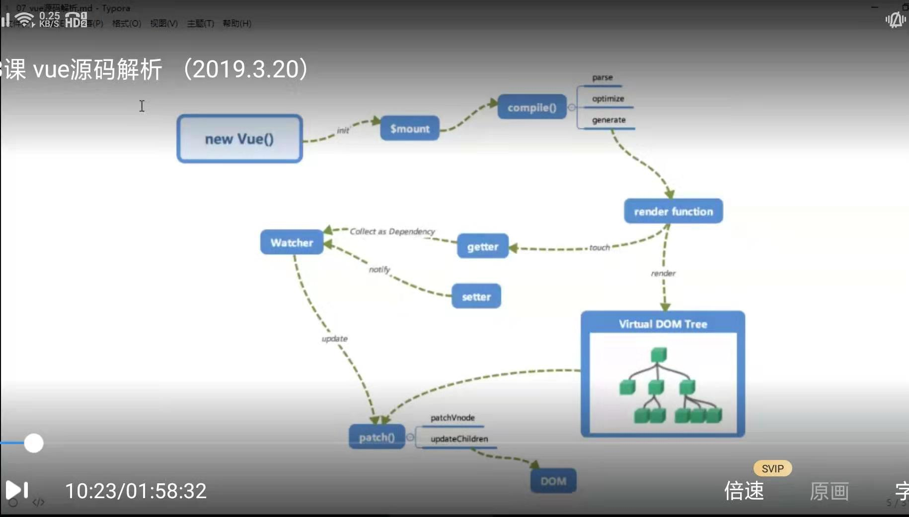
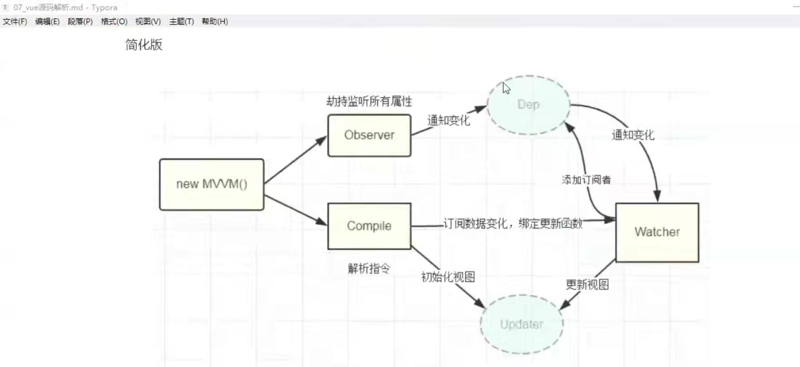

vue核心源码解析
工作机制(static/images/vue工作机制)：
new Vue()，vue进行初始化,初始化生命周期、事件、props、methods、data、computed与watch等/
其中最重要的是通过Object.defineProperty设置setter和getter(会直接在一个对象上定义一个新属性，或者修改一个对象的现有属性， 并返回这个对象)
实现响应式和依赖收集
初始化后进行$mount挂载组件(源节点):
$mount启动compile()，主要是集中在parse（解析ｖｕｅ指令，{{}}）,optimize(标记静态节点，省略ｄｉｆｆ，优化性能),generate（把parse生成的ast转化为渲染函数render function）
扫描template中的html，生成对应的渲染函数，最后汇总生成虚拟节点树
render function之间使用ｄｉｆｆ算法比较，调用ｐａｔｃｈ进行ｄｏｍ的渲染
在ｒｅｎｄｅｒ后可以进行依赖收集
ｗａｔｃｈ（观察者）监听ｄｏｍ变化，调用ｐａｔｃｈ进行ｄｏｍ渲染

简化(static/images/个人vue工作机制)：
实现数据监听，劫持，会初始化视图
个人kvue封装总结
new Vue
1.初始化，数据的响应化（defineReactive），怎么进行数据响应化，通过数据劫持（通过Object.defineProperty进行绑定），为什么绑定（数值变化，进行更新）
，依赖收集（接受更新），怎么更新（complete编译），
通过complete,扫描dom中的特殊标识，进行依赖收集，通过创建watch（扫描出来的节点传入），watch集合在dep中，
set修改数据，通知dep去更新watch，进行update